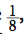

BÖLÜM 7
Kollamaya Cesaretin Var mı? Akraba Seçilimi
Kalahari Çölü’nde avlanan Kudu’nun birkaç bin kilometre kuzey doğusunda bulunan Somali’de, Kismayo bölgesinde Hint Okyanusu’na dökülen Jubba Nehri’nin etrafında, gün yavaş yavaş doğuyordu. Bu bölgede her yer verimli olmasa da, Etiyopya’nın yüksekliklerinden başlayıp Hint Okyanusu’na kadar ulaşabilen bu nehrin civarı, birçok ilginç türün yuvasıydı. Güneş, yarı kurak bölgeyi yavaş yavaş ısıtmaya başladığında, türler de yeni bir güne başlamanın telaşıyla hareketlenmişti. Bu türlerden biri, bir Homo sapiens bireyi olan Mehmet Arif’ti. Arif, esasında kıtanın kuzeyinde, Turkana Gölü çevresinde fosil kazıları yapan ve tarihin gizemlerini ortaya çıkaran bir arkeolog ve paleontologdu. Ancak işlerin duraklamasını fırsat bilerek, Afrika’nın derinliklerinde çekilecek bir belgesel ekibine katılmış ve buradaki çalışmalara katkı sunuyordu. Ekip, onu Somali’ye kadar getirmişti.
Günün ilk ışıklarıyla birlikte devasa kameralar, uzun ipler, kuvvetli halatlar, arazi araçları, vb. âlet ve edevatlar hazırlanmış, yeni günde yakalanacak yeni belgesel kareleri için heyecanlı bekleyiş başlamıştı. Aslında hedefleri bir Loxodonta africana, yani Afrika Çalı Fili yakalayabilmekti, ancak bir süredir pekiyi görüntü alamamış oldukları için, herhangi bir ilgi çekici tür veya olay için gözlerini dört açıyorlardı. Seyrek ağaçlar ve kurak çalılar arasında etrafı gözleyerek ilerliyorlardı.
Etrafı merakla inceleyen gözler, sadece Homo sapiens’e ait değildi. Olabildiğince sessiz bir şekilde ilerleyen araçlarından birkaç yüz metre ötedeki çalıların arkasında, genişçe bir Chlorocebus pygerythus, yani vervet maymunu ailesi yaşıyordu. Bu çevik maymunlar, genelde çalılardan ve ağaçlardan buldukları meyveler ve otlarla besleniyorlardı. İnsanlara oldukça benzer davranış kalıpları bulunan vervet maymunlarının, kimi zaman tıpkı insanlar gibi hipertansiyon veya anksiyete hastalıklarına yakalandığı, hatta insanların yaşam alanlarında barındırılan bireylerinin alkol bağımlılığı geliştirdiği bile biliniyordu. Yaklaşık 45 santimetre uzunluğundaki bu ufak Eski Dünya Maymunları, çalıların arkasından sessizce, ilerleyen arabayı ve içindekileri gözlüyorlardı.
Arabanın gözden kaybolmasından birkaç dakika sonra, elindeki vahşi muz yaprağını bitiren, toplamda hayatta olan 4 çocuğa ve 11 toruna sahip olan yaşlı vervet maymunu, ağır bir şekilde yakındaki kısa ağacın üzerine tırmandı ve oradan etrafı izlemeye başladı. Yaklaşık yarım saat boyunca etrafı kolaçan eden büyükanne maymun, yine ağır bir şekilde ağaçtan inip, başka besin kaynakları bulmak üzere ailesinden uzaklaştı.
Birkaç dakikalık bir yürüyüş sonrasında, daha önce varmadığı bir bufalo çalısına vardı. Bu çalılıklarda bulacağı meyveler için heyecanlanarak, hızla çalıların arasına daldı. İşte o anda, kendi türünden olduğuna emin olduğu bir bireyin zayıf ciyaklamalarını duydu. Gözüne kestirdiği meyvelerin yerini ezberlemeyi ihmal etmeyerek, hızla sesin kaynağına döndü ve çalılar arasında 3 metre kadar ilerledi. Bu noktada, kokusundan ve görünümünden kendi ailesinden bir birey olmadığına emin olduğu, yaklaşık 2.5 aylık ufak vervet maymununu, ayağına ve bileğine dikenler batmış bir şekilde buldu.
İkinci bir defa düşünmeksizin yavruyu kucakladı ve dikkatli bir şekilde çalılardan çıkardı, hızla ailesinin yanına götürdü. Ailesinin gizlendiği çalılıklara vardığında, elindeki yavruyu yavaşça yere bıraktı. Kısa sürede etrafını ailenin diğer bireyleri doldurdu ve her biri, dikkatlice kendi türünden olan ancak kendi ailelerine ait olmayan yavruya baktı. 3-4 tanesinin ilgisi kısa sürede kayboldu ve çalılar arasında meyve yemeyi sürdürmek üzere geri döndüler. Birkaç tanesi ciyaklayan yavruya yanaştı, biraz kokladı, birkaç yerine dokundu, sonrasında ürkerek geri çekildi. Büyükanne ise onların tepkilerini bir miktar izledikten sonra, yavruya usulca yanaşarak elleriyle, ayağına batmış dikenleri toplamaya başladı. Bunu gören dişi vervetlerden biri, diliyle yavrunun gözlerini ve burnunu yalayarak temizledi. Yavru vervet, 20 dakika içerisinde tüm dikenlerinden arınmış ve iyice temizlenmişti.
Aradan 15 gün geçmişti ve besin bulmanın güç olduğu, kurak dönemde, obur yavruya aile itinayla bakmış ve toparlanmasını sağlamıştı. Kısa sürede ailenin tüm bireyleri, yavruya alışmış ve kendilerinden biri olarak görmeye başlamıştı. Artık yabancı yavru, yeni yavrularla oynuyor, anneler ve özellikle büyükanne, ufaklıkla yakından ilgileniyordu. Vervetler, kendi besin ve alanlarından fedakârlık ederek, tamamen yabancı bir yavrunun bakımını üstlenmişlerdi.
Tüm bu olaylara tanıklık eden, sadece vervetler değildi. Ariflerin ağaçlar arasına kurdukları gizli kameralar, tüm bu yaşananları kaydetmiş ve depolamıştı. Kısa süre sonra birçok önemli bilim dergisinde, vervetlerin bu fedakâr davranışı, “Maymunlarda İnsan Benzeri Fedakârlığa Yeni Örnek” başlığıyla sunulacaktı…
Gerçekten de, doğayı incelediğimizde çok net bir gerçekle karşılaşırız: Doğada sadece türler, popülasyonlar, bireyler yoktur. Doğadaki en önemli sosyal gruplardan bir tanesi, ailedir. Genelde insanların aklına “aile” denince gelen, 1. dereceden akrabalardır, yani anne, baba, kardeşler ve çocuklar. Ayrıca gözümüzün önünde canlanan “aile” figürü, sıcak bir odanın içerisinde oturan insanlardır. Hâlbuki doğaya baktığımızda, örneğimizde gördüğümüz gibi, aile kavramının çok daha ucu açık olduğunu ve hiç de rahat bir ortamda gelişmediğini görürüz.
Doğadaki türlerde kimi zaman aileler olabildiği gibi, kimi zaman bireyler tek başlarına yaşarlar. Fakat hayvanların büyük çoğunluğunda, öyle veya böyle bir aile kavramının olduğunu görürüz. Örneğin fillerde ve aslanlar gibi birçok kedigilde, aile yapısı çok önemlidir. Benzer bir şekilde, en yakın yaşayan kuzenlerimiz olan şempanzeler ve bonobolarda, ilginç aile yapılarına rastlarız. Kimisinde aile bağları sıkıdır, kimisinde daha gevşektir. Üstelik aynı türün içerisindeki ailelerde bile, birbirinden farklı bağlılık seviyeleri görürüz.
Ancak burada daha ilginç olanı, çeşitli durumlarda canlıların aldığı kararların ve sergiledikleri davranışların, grup içerisinde bulunan akrabaların sayısına, onlara olan yakınlığa ve koşullara göre değişiyor olmasıdır. Yani grup içerisinde bir aile üyemizin bulunduğu zamanlar sergilediğimiz davranışlarla, bulunmadığı zamanlar sergilediğimiz davranışlar birbirinden farklıdır. Benzer şekilde, bir grubun içerisindeki bireylerin birbirinden farklı eğilimleri, akrabalık ilişkilerinin etkilenmesine neden olabilmektedir. Yazının başında aktardığım hikâyede, ailenin genç bir bireyi o yavruyu bulmuş olsa, sahiplenmeyebilirdi. Ancak yavruyu bulan, ailenin en yaşlısı olan birey olunca, işler değişmekte ve o birey grubunun (ailenin) evrimsel başarısı olumlu ya da olumsuz olarak etkilenebilmektedir. Evrimsel açıdan bakıldığında, bu farklılığın önemi özellikle türün veya bireylerin devamlılığına etki edecek durumlarda ön plana çıkmaktadır. Bu örneğimizde, kendi alan ve yiyeceklerinden fedakârlık ederek, türlerinden bir diğer bireyi sahiplenen bir aileyi sizlere sundum. Az sonra ise, akrabalarını kayıran bazı tür örneklerini size anlatacağım. Fakat önce, Akraba Seçilimi’nin ne olduğuna bir bakalım.
Akraba kavramının seçilimsel bir anlamı olabileceğini fark eden ilk bilim insanı, yine Charles Darwin olmuştur. Türlerin Kökeni isimli kitabında türlerin yaptıklarının ailelerinden etkilendiğine değinmiş, bununla ilgili inek türleri üzerinden örnekler vermiştir. Ancak bugün bizlerin Akraba (Kin) Seçilimi adını verdiğimiz ve detaylandırdığımız Seçilim Mekanizmasına, bütün detaylarıyla girmemiş ve yüzeysel olarak değinebilmiştir. Bu sebeple, Darwin’den sonra gelen evrimsel biyologlar, bu konuda ön plana çıkmaktadır. Bu arada belirtmekte fayda görüyorum: “kin” kelimesi, biyolojik olarak “aynı soydan gelen bireylerin oluşturduğu grup” anlamında kullanılmakta, evrimsel biyoloji açısından ise “akraba” ile eşanlamlı olarak kullanılmaktadır.
Akraba Seçilimi’ne yönelik matematiksel çalışmalarıyla ünlü olan biyologlar arasında, 1930 yılında yayınladığı Doğal Seçilim’in Genetik Teorisi isimli kitabıyla Ronald Fisher, 1932 yılında yayınladığı Evrimin Nedenleri isimli kitabı ve 1955 yılında yayınladığı Popülasyon Genetiği başlıklı makaleleriyle John Burdon Sanderson Haldane ve son olarak, muhtemelen bu alandaki en ünlü evrimsel biyologlardan olan, 1964 yılında yayınladığı Sosyal Davranışların Genetik Evrimi başlıklı makalesiyle William Donald Hamilton bulunmaktadır. Bu ünlü evrimsel biyologlar, evrimin Doğal, Cinsel ve Yapay Seçilim haricinde, kendisinden önce gelenlerin araştırmalarından yola çıkarak 1964 yılında yazdığı Grup Seçilimi ve Akraba Seçilimi başlıklı makalesinde ünlü evrimsel biyolog John Maynard Smith’in ilk defa adını koyduğu Akraba Seçilimi isimli dördüncü bir etmenden etkilendiğini keşfetmişlerdir. Smith, kitabında Akraba Seçilimi’ni “çevresel baskılardan etkilenen bireylerin, yakın akrabalarının hayatta kalma başarısını destekleyen karakterlerin evrimi” olarak tanımlamaktadır.
Tanım, oldukça açıklayıcı ve nettir: Türlerin içerisindeki bireyler, kendilerinin yakın akrabalarını (ve hatta türdeşlerini) korumak için, normalde Doğal Seçilim tarafından desteklenmeyecek davranışlar sergileyebilir, nesiller içerisinde buna yönelik özellikler evrimleştirebilirler. Bu, ilk bakışta mantıksız gözükmektedir, çünkü kitabımın bu noktasına kadar bir nevi canlılığın ne kadar bencil, vahşi ve hayatta kalma/üreme odaklı olduğundan bahsettim. Ancak biliyoruz ki doğada, özellikle Memeliler Sınıfı içerisinde, birçok “şefkat”, “kardeşlik”, “dayanışma” duyguları bulunuyor. İnsan türünde tüm bunlar, daha da kapsamlı olabiliyor. Bazı türlerde, sadece kendi türüne değil, başka diğer türlere yönelik bile şefkat gelişebiliyor. Peki, bunlar nasıl oluyor da bu vahşi hayatta kalma ve üreme mücadelesi içerisinde evrimleşebiliyor? Doğal Seçilim ile Cinsel Seçilim, bunların evrimine nasıl müsaade ediyor?
Burada, tekrar evrimin genetik boyutuna dönmekte fayda görüyorum. Bir süredir genlerden bahsetmiyordum. Bu sebeple, bu noktadaki dönüşün, kitabımın bu noktasına kadar olan konuların bir toparlaması olacağına inanıyorum.
Bildiğimiz ve artık öğrendiğimiz şekilde Evrimsel Mekanizmalar esasında genlerdeki çeşitliliği seçmeye yönelik olarak işlemektedir. Çevre şartlarının öngörülemez bir biçimde değişiminden ötürü, canlılar üzerinde oluşan seçilim baskıları, nesiller içerisinde evrimsel değişimlere neden olmaktadır, çünkü sadece genetik yapıları çevreye uyumlu olan bireyler hayatta kalabilmekte, geri kalanlar elenmektedir. Hayatta kalanlar genlerini gelecek nesillere aktarmayı sürdürebilirken, elenenler genleriyle birlikte yok olmaktadırlar.
Bu süreç içerisinde gördüğümüz ilginç bir nokta vardır: Canlıların davranışsal eğilimlerine doğumlarından ölümlerine dek katkı sağlayan genler, yakın akrabalarda birbirine daha yakın nitelikte, uzak akrabalarda ve çok uzak akrabalarda (akraba sayılamayacak bireylerde), birbirinden oldukça uzaktır. Çünkü örneğin kardeşlerin ebeveynlerinden aldıkları genler büyük oranda birbirine benzerken, sokaktan rastgele seçeceğimiz iki insanın genlerinin birbirine benzerliği daha az olacaktır. Bu durumda karşımıza çıkan şudur: Sadece seçilimsel açıdan avantajlı bireylerin değil, aynı zamanda bu avantajlı bireylerin yakın akrabalarının da hayatta kalma şansı arttırılabilirse, başarılı olan daha fazla gen varlığını koruyabilecek ve gelecek nesillere aktarılabilecektir. Bunu başarabilen türler, toplam başarı değerlendirildiğinde, başaramayanlara göre daha da başarılı olacaklardır. Dolayısıyla, evrimsel süreç içerisinde yakın akrabaların korunması, bir nevi kendi genlerimizin korunması anlamına gelmektedir. Bu sebeple, evrim tarihinde, akrabaların korunmasını sağlayacak süreçler, hem Doğal Seçilim, hem Cinsel Seçilim tarafından desteklenecektir. İşte canlıların üzerinde bulunan ve akrabalarını, daha uzak yakınlıktaki bireylere göre daha fazla kollamalarına zorlayan seçilim baskısına, Akraba Seçilimi denmektedir.
Bu karmaşık gibi gözüken anlatımın temelinde, çok basit bir özet yatmaktadır: Bir türe ait bireyler, hayatta kalma ve üreme konusunda akrabalarını, türün diğer bireylerine karşı kayırırlar. Konu, esasında bu kadar basit ve açıktır. Doğanın bu sade gerçekliğinin matematiksel olarak ifade edilebileceğini düşünen W. D. Hamilton, günümüzde kendi adıyla anılan Hamilton Kuralı’nı (kitabımın ilk bölümüne referans olarak: Hamilton İlkesi’ni, Hamilton Gerçeği’ni) keşfetmiştir. Bu kurala girmeden önce, yine hatırlamamız gereken ve kitabımın bu noktasına kadar olan kısımlarını toparlamanızı sağlayacak bir noktaya değinmemde fayda görüyorum:
Hatırlayacak olursanız Cinsel Seçilim’e atfettiğim 6. bölümde takas (trade-off) ilkesinden bahsetmiş, evrim tarihinin tamamının esasında enerji dengesi üzerine kurulu olduğunu anlatmıştım. Burada, bu gerçeği, tamamen farklı bir konuda yeniden görüyoruz: koruyuculuk yapmak amacıyla kaybedilecek enerjinin, koruduğumuz bireyden veya gruptan türün veya bireyin elde edeceği avantajdan fazla veya az olması durumu… Bunu biraz açayım: Bir türün herhangi bir bireyi, akrabalarını koruyucu bir davranışa girecekse, Doğal Seçilim tarafından bu “gereksiz olabilecek” enerji sarfiyatının elenmemesi için, türün bu koruyuculuktan fazlasıyla fayda etmesi gerekmektedir. Çünkü koruyuculuğun sonucu, vahşi doğada ölüm olabilir. Bir aslanın bir geyiğe şefkat duyması, kendisinin ve çocuklarının ölümü demektir. Bir kartalın avına merhamet etmesi, soyunu tüketebilecek bir yaklaşım olabilir. Çünkü avcıların varlığı, avlarından beslenmelerine bağlıdır. Sadece av-avcı ilişkisi olarak düşünmek de doğru değil: bir annenin, bir yavruya şefkat gösterip, onu kollaması bile, kendisinin yok olma riskini arttırmakta, gelecekte vereceği muhtemel yavruları tehlikeye atmaktadır. Bu, Doğal Seçilim açısından kabul edilmez bir sarfiyattır; ancak az sonra göreceğimiz sebeplerle, Akraba Seçilimi’nin kattığı faydalarla dengelenmektedir.
İşte Hamilton Kuralı, bir türün fedakâr/koruyucu/şefkatli/merhametli davranışlarının ne zaman Doğal Seçilim’in eleyici etkisinden üstün geleceğini matematiksel olarak yalın bir şekilde göstermektedir:
r x B > C
Basit, yalın, sade… İki kavramın matematiksel çarpımı, bir üçüncüsünden büyük ise, fedakârca (altruistik) yaklaşmak evrimsel açıdan avantajlıdır; küçük ise, dezavantajlıdır. Elbette doğadaki türler bu matematiği bilerek, buna uygun olacak şekilde çalışmazlar; bu, doğada gördüğümüzün matematiksel bir ifadesinden ibarettir. Doğanın türler üzerinde dikte ettiğini, matematiksel bir şekilde izah ederiz, birbirimize aktarır, analiz ederiz. Zaten matematik de bunun için vardır. Peki bu denklem bize ne anlatır?
Buradaki “r” ifadesi, tür içerisindeki bir bireyin, bir diğerine olan genetik yakınlığıdır. Yani “akrabalık ilişkisi”dir. Bunu matematiksel olarak ifade etmek için, kesirli bazı sayılar kullanırız. Örneğin, yukarıdaki Hamilton İlkesi içerisinde, ikizlerin genetik yakınlığı 1, iki öz kardeşin genetik yakınlığı , yani 0.5 olarak ifade edilir ve bu değer ebeveyn-yavru ilişkisi için de aynıdır. Büyükbaba ve büyükannelerin torunları ile olan genetik yakınlığı, amcalar ve teyzelerin yeğenleriyle olan genetik yakınlığı , yani 0.25 ile ifade edilir. Kuzenler ise , yani 0.125 yakınlıktadır (kuzenlerle ilgili daha detaylı analizler de mevcuttur). Görüleceği gibi akrabalık ilişkisi uzaklaştıkça, “r” çarpanı da küçülmektedir.
“B” çarpanı ise, Akraba Seçilimi’nin ana unsuru olan fedakârlığın, bireye getireceği ek katkıdır. Genellikle, üreme başarısındaki artış ile ifade edilir. “C” terimi ise, yapılacak olan bu fedakâr davranış sonucunda, bireyin üreme başarısındaki düşüşü temsil etmektedir. Örneğin yapılacak olan davranış, eğer bireyin ölümüne sebep olacaksa, üreme başarısı %100 düşecektir diyebiliriz.
Bu terimler dâhilinde, matematiksel ifadeyi analiz edecek olursak: genetik yakınlığın, fedakâr davranışın katkısıyla çarpım değeri, bu fedakâr davranışın mal olabileceklerinden fazlaysa, fedakâr davranış sergilemek Akraba Seçilimi tarafından desteklenecektir. Eğer daha düşükse, bu davranışı sergileyen bireyler, elenecektir. Dolayısıyla bu yalın matematiksel ifade, bize çok net bir şekilde Akraba Seçilimi’nin nasıl işlediğini göstermektedir (benzer matematiksel ilişkiler diğer seçilim türlerinde de görülür; ancak en kolay anlaşılanı ve basiti bu olduğu için, kitabımda buna yer vermek istedim).
Göreceğiniz üzere, bu ifadeye göre, genetik yakınlık 1’e yaklaştıkça (tek yumurta ikizlerinde olduğu gibi), fedakâr davranışların sergilenme ihtimali artar. Eğer ki genetik yakınlık 1’den çok düşükse, muhtemelen kaybedilecek şeylerin miktarı çok daha fazla olacak ve altruistik davranış sergilemek, bireyin elenmesine neden olacaktır.
Bu noktada, kitabımın yirminci ve son değişim noktasına geliyorum: Türlerin evrimsel değişimleri, her zaman ve mutlaka enerji dengesi üzerine kuruludur. Eğer ki enerji kaybı (ki bu kayıp, hayatta kalmak ve üremek amacıyla kullanılacak enerjiden kayıp demektir), edinilecek faydadan büyükse, o davranışı sergilemek, o evrimsel sürece girmek, o yöne doğru evrimleşmek başarısızlıkla sonuçlanacaktır (“trade-off” ilkesini hatırlayın). Ancak eğer ki harcanacak enerji, o enerjinin harcandığı değişimin türe kazandırdıklarından çok daha fazlasını türe katacaksa, o yönde giden bireyler diğerlerine göre avantajlı olacaktır. Yeniden söylemem gerekirse, elbette doğa ve evrim bir hesaba kitaba göre ilerlemez, sürecin gelişimi böyledir. Biz bu sürece bakar, onu matematiksel ve fiziksel olarak analiz ederiz. Matematiksel analizimiz bizleri yukarıdaki gibi denklemlere götürürken, fiziksel analizimiz bizlere enerji dengesinin önemini göstermektedir.
Şimdi doğadan bir diğer Akraba Seçilimi örneğini ele alalım. Benim en hoşuma giden, Cornell Üniversitesi’nden Dr. Paul W. Sherman’ın “Belding Yer Sincabı” olarak bilinen Urocitellus beldingi türü üzerinde yaptığı Akraba Seçilimi deneyleridir. Şimdi, bu deneylere bir göz atalım ve Akraba Seçilimi’nin önemini ve Hamilton İlkesi’nin nasıl çalıştığını anlayalım:
Uzun yıllar boyunca sincapların, avcılarının yaklaşması sırasında çıkardıkları uyarı çığlıklarının Akraba Seçilimi ile alakası olabileceği düşünülmekteydi; ancak 40 yılı aşkın bir süre için kimse bunu nasıl ispatlayabileceğini bilemedi. Dr. Sherman ve 10 kişilik alan ekibi, bunu gösterebilmek adına 1977 yılında kolları sıvadılar ve yıllar boyunca Amerika’nın Kaliforniya eyaletinde bulunan Sierra Nevada’daki yer sincaplarının soy ağaçlarını çıkardılar. Yaklaşık 2 yıl boyunca, toplamları yüzlerle ifade edilebilecek kadar sincabın birbirleriyle olan akrabalık ilişkilerini tespit ettiler. Alanda, 3000 saatten fazla zaman geçiren Sherman ve ekibi, aynı zamanda sincapların karadan saldıran avcılarını da denetleyip takip ettiler. Gözlem boyunca inceledikleri popülasyon 67 defa sansarlar, 11 defa porsuklar ve 24 defa diğer avcılar tarafından saldırıya uğradı. Bunca saldırı, farklı bireylerin verdikleri tepkiyle ilgili detaylı analizler yapabilmelerini sağladı. Her saldırıda mutlaka, bazı bireyler (hepsi değil!) saklanacakları yerde dik konuma geçerek çığlıklar atmaktaydı. Ancak bunun neden olduğu, asıl araştırma konusuydu.
Sherman ve arkadaşları, öncelikle bu çığlıkların avcıyı yanıltma, korkutma, şaşırtma gibi amaçlarla yapılmadığını gösterdi. Hiçbir saldırıda avcı, bu çığlıklar sebebiyle herhangi bir davranış değişikliği göstermiyordu. Üstelik yaptığı istatistiki çalışmalarda bu çığlık atan bireylerin, atmayanlara göre avcının dikkatini çekme ve saldırıya uğrama, dolayısıyla ölme şansının daha da arttığını gösterdi. Böyle bir durum, ne Doğal Seçilim tarafından desteklenir, ne de Cinsel Seçilim’in desteğini alabilir (zira üreme amaçlı bir davranış değildir). Demek ki bu çığlıkların bambaşka bir sebebi vardı, bu bulunmalıydı.
Özellikle akrabaların bir arada bulunduğu ve bulunmadığı gruplarda yapılan daha detaylı gözlemler, çok ilginç bir sonucu ortaya çıkardı: avcının yaklaştığını gören dişiler, eğer ki yakınlarında, yakın akrabalarının sayısı fazlaysa çok yüksek frekanslı, arka arkaya alarm çığlıkları atmakta ve kendilerini ekstra riske atmak pahasına akrabalarını uyarmaktaydı. Ancak aynı bireyler, eğer ki çevrelerinde çok az akrabaları bulunuyorsa veya bu akrabaların yakınlık derecesi fazla değilse, daha düşük frekanslı, daha seyrek alarm çığlıkları atıyordu. Hele ki etrafta hiç yakın akrabası bulunmuyorsa, tamamen sessiz kalıyor ve kendisini hiç riske atmıyordu.
Sherman ve arkadaşlarının yaptıkları bu keşif, çok net bir şekilde Akraba Seçilimi’ni, yani bir nevi “akrabaları kayırma ve destekleme ilkesi”ni ortaya koydu. Sonrasında, diğer canlılar üzerinde yapılan incelemelerin de aynı sonuçları vermesi, Akraba Seçilimi’nin bir Evrim Mekanizması olduğunu gösterdi. Burada, bireyin evrimsel uyumluluk kabiliyetini belirleyen doğrudan uyum başarısı (direct fitness) yerine, kapsayıcı uyum başarısı (inclusive fitness) kavramı geliştirilmiştir. Bu kavram dâhilinde, sadece bireyin evrimsel başarısı değil, aynı zamanda akrabalarının bireye bağlı olan evrimsel başarıları da değerlendirilir. Bu, Evrimsel Biyoloji’nin doğayı kavramamıza yaptığı devasa katkılardan bir diğeridir.
Bu araştırma sonuçlarını destekleyen bir diğer çalışma, Kansas Üniversitesi’nden Dr. Kenneth B. Armitage tarafından yapılan uzun soluklu bir deneyden gelmiştir. 35 yılı aşkın bir süredir sarı karınlı dağ sincaplarını (Marmota flaviventris) inceleyen Armitage, eğer ki etrafta bir tehdit unsuru varsa, yalnızca yakınlarında kardeşleri olan bireylerin uyarı çığlığı attıklarını tespit etmiştir. Yalnız Armitage’ın çalışmalarında görülmüştür ki, dağ sincapları kuzenlerini ve diğer akrabalarını pek de korumaya yanaşmamaktadır. Bu durum, türden türe aile bağlarının değişikliğine bağlanmaktadır. Yani birkaç sayfa önce verdiğim Hamilton İlkesi’nde, B teriminin değeri, türden türe oldukça değişebilmektedir.
Hikâyenin başındaki örnek tamamen bencillik karşıtı geliyorken, bu örnek kulağa biraz bencil geliyor olabilir. Ancak doğa, bencillik, şahsi düşünceler, vb. kavramlara takılmaz. Biz, doğayı gözler ve gerçekleri ortaya koyarız. Daha sonra bu gerçekleri, kendi değer yargılarımıza göre isimlendirebiliriz. Eğer ki bu koruyucu içgüdü, bencil bir davranış ise, yapacak bir şey yoktur, doğa bizim düşüncelerimiz ve duygularımız ile ilgilenen bir sisteme sahip değildir. Her ne kadar insani duygularımız, kardeşimizi kollamamızın “tamamen duygusal” bir olay olduğuna inanmak istiyor olsa da, en azından mantıklı aklımızın bir kenarında, bunun evrimsel ve genetik kökenleri olduğunu hatırlamakta fayda görüyorum.
Akraba Seçilimi’nin evrimsel değişime katkısı da açıktır, buna da değinerek noktalayalım: Türler içerisindeki bireyler, yakın akrabalarını korudukları zaman, onların kapsayıcı uyum başarılarını arttırırlar. Bu sayede, kendilerinde de büyük oranda bulunan birçok gen yapısının da korunmasını sağlarlar. Eğer ki korunan bu bireyler üreyecek olurlarsa, onların yavruları, koruyan bireyin genlerini de temsil edecektir. Böylece, evrimsel süreç içerisinde, koruyuculuğu sağlayan yapıların evrimine doğru bir yönelim olacak; ancak bu yönelim, çevresel durumların sağladığı enerji dengelerine bağlı olarak değişebilecektir. Yani çevre değiştikçe, ne oranda altruistik davranış sergilemenin faydalı olacağı durumu değişecek, türler de Akraba Seçilimi’nin etkisi altında buna uyum sağlayacak şekilde değişeceklerdir. İşte nesiller içerisinde oluşan bu değişime, evrim diyoruz.
Böylece, Akraba Seçilimi konusunun, bilinen temel Evrim Mekanizmalarının ve kitabımın sonuna gelmiş olduk. Şimdi tüm bu anlattıklarımı kafanızda oturtabilmeniz adına, toparlayıcı bir sonsöz ile sözlerimi noktalayacağım. Böylece, umuyorum ki modern Evrim Kuramı’nın tam olarak ne olduğunu sizlere aktarabilmiş olacağım.